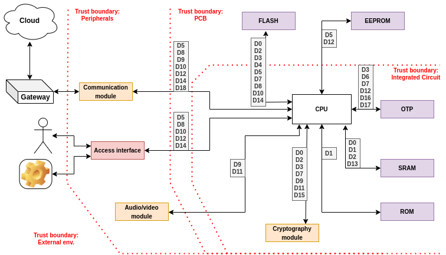
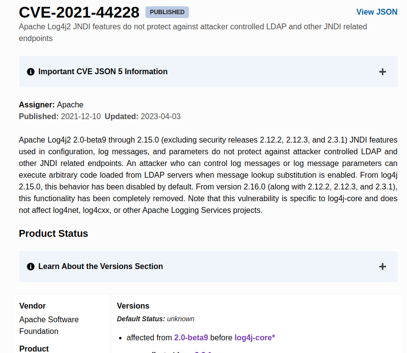
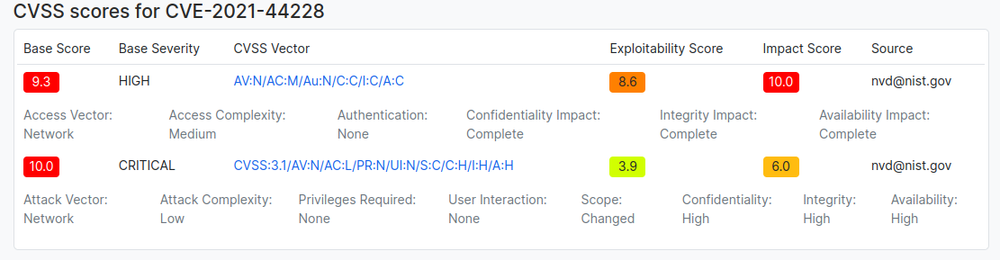
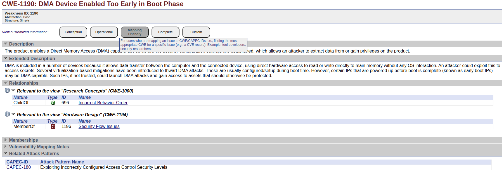
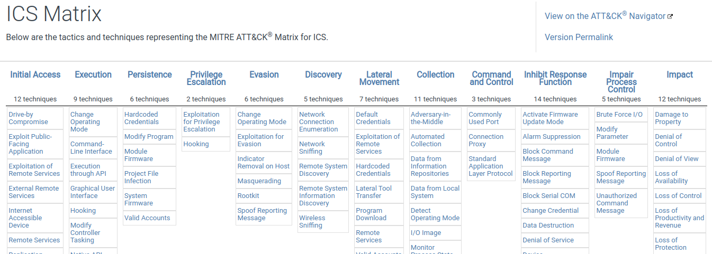
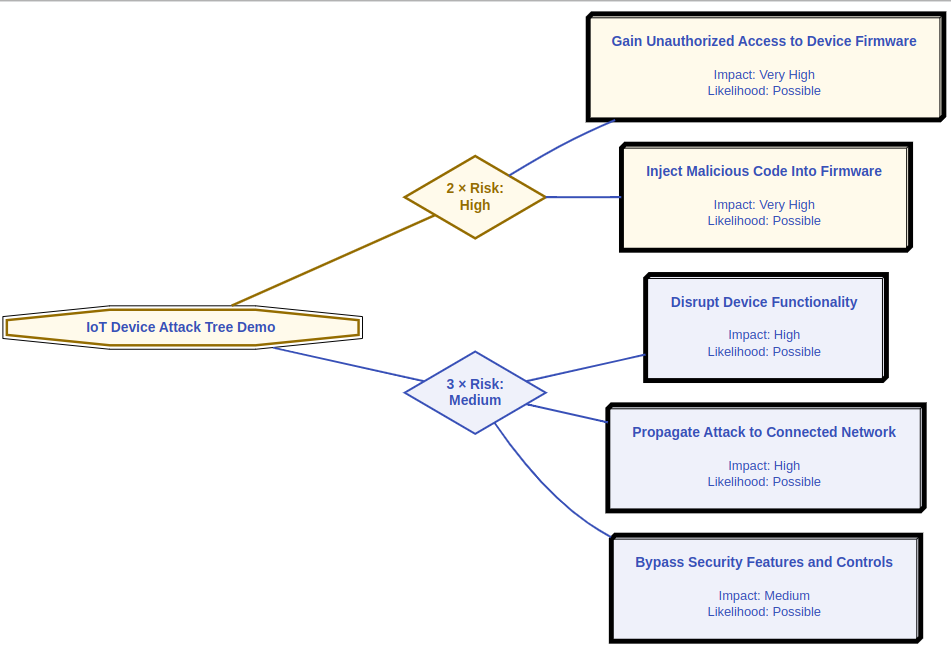

PASTA Security Assessment
Preface
Connecting things to the internet is a satisfying stage in a software developer's career. Handling unique connections through various algorithms and protocols, and sending data across them can be exciting. However, in the real world, things are not that simple. When user data is sent across the World Wide Web, it becomes a prime target for hackers seeking interesting findings. Therefore, it is crucial to implement strategies to mitigate these issues and ensure that our software is aware of the attack vectors it exposes.
Implementing a strategy to cover the most attack vectors by yourself without formal procedure can be challenging. Another layer of difficulties brings the business context and possibility to expose the company to the loss of its good name. Fortunately, we do not need to reinvent the wheel. Developers and systems analyzers can take advantage of already created procedures to create thread models for their purposes.
Threat modeling
Threat modeling is analogous to securing a house with a focus on its windows as entry points. In this scenario, windows represent potential vulnerabilities that malicious actors could exploit. Just as a risk assessment is conducted to evaluate the likelihood of different windows being targeted, their accessibility plays a crucial role. Higher windows, harder to reach, naturally present lower risk compared to ground-level windows. To mitigate these risks, various measures can be taken. Installing bars on the windows serves as a deterrent against unauthorized access, making it significantly harder for potential intruders to breach. Additionally, placing alarms on doors adds an extra layer of protection, alerting homeowners to any attempted breaches. Just as one would assess, prioritize, and implement security measures for vulnerable entry points in a house, threat modeling employs similar principles to safeguard digital systems, focusing on potential threats, risks, and effective countermeasures.
When to do threat models?
Before enrolling into creating the threat model for the product, we should be able to answer the following question:
What are we working on?
This stated question needs to be answered based on facts and data. This means, before having; conceptual drawings, architecture defined and drawn on the white-board we cannot answer this question. Starting the threat modeling, before completing the system design, will be a rabbit hole and there is high probability that many vulnerabilities will be missed. Likewise, the product should have defined business impact. To finish proper threat modeling, it will be necessary to prioritize and measure the impact of vulnerabilities. This cannot be done without the business context. The good example would be to answer the question:
How _____ will impact the company ?
How leaking the user’s color preference will impact the company? Data leakage is not that good, but user's color preference information is not usually something you would like to hide from your neighbors. Let’s say it does not impact the companies' good name much. What, about: How leaking the user's Wi-Fi password will impact the company? This sounds serious. Leaked Wi-Fi credentials can enable attackers to reach for most sophisticated tools to get accounts data etc. A highly popular product that leaks the user’s password can be a big hit for the budged.
Threat models
The current market prepared multiple models for the threat modeling. Existing models differentiates in approaches to threats and integration to existing work flows. The top of the three threat models are: STRIDE, PASTA and OCTAVE.
STRIDE is a model focused strictly on identifying threats in the system. It aims to categorize threats and enumerate all possible problems regarding security. This model does not take into consideration the business impacts and scalability. Often the threat model is extended with additional risk assessment to answer frequently asked questions by the management - how it will impact our company?
PASTA threat model approaches to the risk assessment from different direction. The first thing in this strategy is to define business objectives. Objectives are later used as the input for next stages of the thread model evaluation. Looking at risks by the business impact prism allows taking proper priorities when addressing found issues.
OCTAVE strategy expands the scope to not only product (application), but also includes company polices, security strategies. OCTAVE is a much bigger framework relative to the two mentioned above. The model is defined in hundreds of pages of documentation and is used in few varieties depending on the company size and needs. The details of each OCTAVE variety definitely goes beyond of this note.
STRIDE
Model developed by the Microsoft. STRIDE helps identify potential threats to software systems by categorizing them into these six categories. Spoofing, Tampering, Repudiation, Information Disclosure, Denial of Service, and Elevation of Privilege.
- Spoofing: The attacker tries to convince a device that identity verification has been successful and establishes a connection with the legitimate end client.
- Tampering: Involves unauthorized access to data, for example, through a Man-In-The-Middle attack.
- Repudiation: The system denies having received a message and disclaims any responsibility for undelivered data.
- Information Disclosure: Data loses confidentiality due to the absence of encryption or leakage of a secret key.
- Denial of Service: The system refuses to perform a specific procedure due to overload, lacking resources to process a request.
- Elevation of Privilege: Attackers exploit security vulnerabilities to increase their scope of capabilities within a system, such as gaining access to an administrator console.
The model mainly aims to cover all possible vulnerabilities and address them with proper mitigation strategies. The model itself does not take into consideration business impact and probability of occurrence, but often is extended with threats ranking using DREAD (Damage, Reproducibility, Exploitability, Affected Users, Discoverability) model.
The full documentation about how to start with STRIDE modeling can be read in OWASP open source documentation.
This note steering towards a broader framework, one that slightly tweaks priorities and typically yields more pragmatic outcomes.
PASTA
In PASTA model, the strategy is a bit different, especially with comparison to the STRIDE model. PASTA is an acronym that stands for Process for Attack Simulation and Threat Analysis. It is a 7-step risk-based threat modeling framework.
The full documentation about PASTA thread modeling can be read in GITLAB’s security handbook.
1. Define objectives
The initial stage focus on finding the business requirements based on regulations instead of right away identifying assets and threads. The analysis consist understanding of:
- Business Objectives
- Market Use Cases
- Security Requirements
- Compliance Requirements
- Business Impact Analysis
By starting the work from understanding the environment in which risks are taken, it is possible to define priorities based on facts instead of rough estimates taken mostly from the gut feeling. Concrete values, statistics, metrics of the market enables to create data driven reports which are more trustworthy and supports future decision-making.
2. Define technical scope
Second stage is identifying the technical project scope, distinguish which part of code is maintained and what needs to be upgraded. Then the analysis proceeds with the application decomposition, where assets, actors and use cases are examined. This includes:
- Identifying Application boundaries
- Identify Application Dependencies From Network Environment
- Identify Application Dependencies from Servers
- Identifying Application Dependencies from Software
During the stage, execution engineers tries to enumerate:
- used frameworks with versions,
- components of the application,
- services which the application interacts,
- binaries supplied and created used on the production,
- used libraries with versions,
- actors of the system,
- use cases of the application,
- abuse cases (like in e.g. authentications, transactions).
Understanding the real technical scope offers the potential of limiting the range of risk assessment of our application. We can base on third-party certificates supplied with the products and base on their good reputation. Moreover, despite relaying on someone’s else work, it is still necessary to include risks based on previous incidents and reports. By defining the project boundaries, we divide the work and organize next steps of the product security analysis.
3. Software decomposition - Data Flow Diagram (DFD)
In the realm of software development, understanding the intricacies of an application's functionality is essential. Application decomposition, the process of breaking down a complex software system into smaller, manageable components, is a fundamental step in achieving this understanding. One powerful tool in this process is the Data Flow Diagram (DFD), which provides a visual representation of how data moves within a system, clarifying its operation, and helping to identify key actors, assets, and data repositories involved. We will delve into the process of creating a DFD diagram to map the flow of an application, thereby visually elucidating its core functions.
Data Flow Diagrams are hardly coupled with terms “Actor”, “Asset” and “Data repository”.
Actors are external entities that interact with the application. They can be individuals, other systems, or even automated processes. Actors initiate processes, consume information, and provide input. Identifying actors is crucial as they define the scope and requirements of the application. For instance, in a embedded environment it can be: “User”, “Cloud”, “External device”.
Assets are the objects or pieces of data that the application processes or stores. These could be tangible objects, information, or documents that the system manages. Understanding the assets involved helps developers design appropriate data flows and manage data security. In our embedded environment example, assets might encompass "WiFi credentials”," "User Profiles," and "Stored certificates".
Data repositories are storage units where the application maintains and retrieves data. These repositories can be databases, files, or even external services. Mapping out data repositories clarifies how data is stored and accessed throughout the application. Continuing with the embedded devices scenario, data repositories might include a "External non-volatile memories", a "Cloud Storage" and an "Internal One-Time-Programmable (OTP) memories". DFD diagrams attempt to illustrate how data is transported between different parts of an application. The primary objective of this illustration is to explicitly demonstrate when data crosses trust boundaries. Trust boundaries are conventional limits that highlight regions of the application that may potentially suffer from vulnerabilities and be susceptible to attack vectors. Data transfers between nodes usually is also correlated with control mechanisms that protects transmissions and helps to mitigate attack vectors. Prepared diagram with all mentioned elements give opportunity to find possible issues and safety negligence. To organize the DFD, usually, two tables are created; “Table of assets” and “Table of controls”. This allows to use short symbols on diagram instead repeating full name which may darken the overall picture. - Table of assets (A01, A02, A03, …, An) consists data parts, data chunks, group of data etc. - Table of controls (C01, C02, C03, …, Cn) consist cryptographic algorithms, CRCs, keys, hashes etc.

4. Threat intelligence analysis
Gathered necessary information about the subject of thread analysis must be challenged against facts and intel collected based on similar products.
The PASTA framework focus on pragmatic approach to threat mitigation. In the fourth step the data about threat intelligence is collected. By learning on someone’s mistakes the product can be improved and checked if not vulnerable to already discovered attacks.
To start collecting the intel data we can start browsing through our own databases. All logs, statistics, past security incidents can deliver important pieces of knowledge where we should find the attack vectors. Collecting such knowledge from previous devices owned by the company can give a lot of insights and know-how.
Another possibility is reaching to Common Vulnerabilities Enumeration (CVE) that is based on Common Vulnerability Scoring System (CVSS), and to Common Weakness Enumeration (CWE)
CVE
The CVE is a standardized system for identifying and naming security vulnerabilities in software and hardware products. CVE is a community-driven effort that aims to provide a common language and reference point for discussing and sharing information about security vulnerabilities across the cyber security community. CVE focused on identifying and uniquely naming specific instances of security vulnerabilities in software, hardware, or systems. It provides a standardized reference point for discussing and sharing information about individual security vulnerabilities.
The CVE can be found on https://www.cve.org/ web page. The database is designed to be searched by having concrete CVE number that links to the full description of discovered vulnerability in concrete product, but can be also searched by keywords.
The popular CVE number lately was log4j issue that impacted most of the devices with installed Apache server. This issue has been described and posted with unique ID - ”CVE-2021-44228”. By looking up this CVE number it is possible to gather some more data about where it was found, what does in impact, who discovered the issue, what product versions is vulnerable and other reference links that tells some more background details about situation.

The CVE database i also extended into NVD data base https://nvd.nist.gov/, where more details about found volunerabilites can be found together with CVSS scoring, references etc.
CVSS
Where CVSS is a standardized system for assessing and quantifying the severity of security vulnerabilities in software, hardware, or systems. It provides a numerical score, known as the CVSS score, that represents the severity of a vulnerability. The CVSS score is calculated based on several factors, including the impact of the vulnerability, the ease of exploitation, and the scope of the vulnerability.
The CVSS score can be calculated by the web-based calculator https://www.first.org/cvss/calculator/4.0 or existing metrics can be searched by using https://www.cvedetails.com/ site, or NVD https://nvd.nist.gov/. To continue with above example let’s check how the “log4j” vulnerability has been measured by using CVSS scoring.

The CVSS scoring is versioned, depending on which version of the framework is used, the score can differentiate. Anyhow, the format of the score is similar and can be expressed easily with simple abbreviation called “Base score string” in e.g. CVSS:3.1/AV:N/AC:L/PR:N/UI:N/S:C/C:H/I:H/A:H . What means: CVSS:3.1 - version of scoring version, AV:N - Attack Vector: Network, AC:L- Attack Complexity: Low, PR:N - Privileges Required: None, UI:N - User Interaction: None, S:C - Scope: Changed, C:H - Confidentiality: High, I:H - Integrity: High. A:H - Availability: High.
The CVSS scoring is usually constructed from three parts: base. temporal, environmental.
Base Score Metrics - offer an inherent assessment of a vulnerability's characteristics. They include essential metrics such as attack vector, complexity, and impact. Importantly, these metrics remain constant for a given vulnerability, irrespective of the specific environment.
Temporal Score Metrics - temporal Score Metrics provide dynamic information that can change over time but is not tied to a particular environment. These metrics consider factors such as exploitability, patch availability, and confidence. They reflect the evolving nature of a vulnerability in the short term.
Environmental Score Metrics - environmental Score Metrics allow for customization of the CVSS score to align with an organization's unique environment. They take into account the organization's specific requirements for confidentiality, integrity, and availability. These metrics result in adjusted scores, including the Modified Base Score and Modified Temporal Score, based on the context of the organization.
CWE
CWE is a community-driven initiative that aims to identify and categorize common software weaknesses or vulnerabilities that can lead to security issues. It provides a comprehensive list of known software weaknesses, each assigned a unique identifier and description. CWE helps developers, security analysts, and organizations understand and address vulnerabilities in their software by providing a common language and taxonomy for discussing weaknesses.
The CWE data base can be found under following web page: https://cwe.mitre.org/. The page can be searched by several perspective, such by:
- Software Development.
- Hardware Design,
- Research Concepts,
- Other Criteria.
Each CWE record is defined by unique CWE number in e.g. “CWE-1190” what translates into “DMA Device Enabled Too Early in Boot Phase”. The record has description about potential attack vectors, common consequences and related attack patterns (CAPEC). The most important benefit of using CWE data base is categorization of the threats and links to reference information about risks. This allows to search for much brother scope of attacks in difference to CVE collection.

MITRE ATT&CK
The database naming derives from Adversarial Tactics, Techniques, and Common Knowledge. The knowledge collected in one place is organized into stages of attacks, and described techniques are categorized into matrices corresponding to different product types. The knowledge base aims to describe techniques used for security violations in three main categories of products: Enterprise, Mobile, and Industrial Control Systems (ICS).
MITRE ATT&CK enables users to explore well-known attack patterns and strategies. This database enhances awareness of threat intelligence and facilitates the analysis of products in terms of known attack techniques.
Each technique record includes a dedicated section describing the approach, providing guidance on mitigating the exploit, and outlining how to detect the pattern within our products. The database draws from real-world examples that have undergone comprehensive analysis and study. By referencing practical examples, we can readily assess whether similar scenarios might impact our product. All essential information is conveniently consolidated in one place, allowing us to gather valuable data for our analysis and base our decisions on the facts provided by the MITRE ATT&CK knowledge base.

The database has interactive tool that allows you to create dynamic matrix stating all necessary information about analyzed techniques on the picture - https://mitre-attack.github.io/attack-navigator/. It is possible to toggle the techniques, mark probabilities, add notes, add links and add own metadata. All these information are propagated through techniques so it is much easier to relate to those information in next stages of the security analysis.
Attack Trees
Attack trees are a graphical representation and analysis tool used in the field of information security and cybersecurity to model and analyze potential threats and vulnerabilities within a system. They provide a structured way to depict and analyze different attack scenarios and their associated risks. Attack trees help security professionals and organizations understand the various ways in which an attacker could compromise a system, allowing them to prioritize security measures and develop effective countermeasures.
Here's how attack trees work:
- Root Node: At the top of the tree, you have the "root node," which represents the primary objective or target of an attack, such as gaining unauthorized access to a computer system or stealing sensitive data.
- Nodes: Beneath the root node, you have various "nodes" that represent specific subgoals or steps an attacker might take to achieve the primary objective. Each node can branch out into multiple child nodes, creating a tree-like structure.
- Leaves: The leaves of the tree represent the specific actions or conditions an attacker must fulfill to accomplish a subgoal. These are typically the lowest-level nodes and often include specific vulnerabilities or weaknesses in the system.
- Edges: Edges or connectors between nodes represent the logical relationships between subgoals. They can indicate "AND" relationships (both subgoals must be achieved) or "OR" relationships (either subgoal can be achieved).
- Probabilities and Costs: Attack trees can also incorporate probabilities and costs associated with each node or leaf. This allows analysts to assign values to the likelihood of success for each subgoal and the potential impact of a successful attack.
- Analysis: Once an attack tree is constructed, it can be analyzed to identify high-risk paths and vulnerabilities within the system. Security professionals can then prioritize mitigation efforts based on this analysis.
Attack trees are a valuable tool for risk assessment, threat modeling, and decision-making in cybersecurity. They can help organizations anticipate and plan for potential security breaches, making it easier to allocate resources and implement countermeasures to protect their systems and data. Additionally, they can be used to communicate security risks and concerns to non-technical stakeholders in a more accessible and visual manner.
To create attack tree you should first define what kind of objective attacker can try to achieve. For this example, let the main goal be “Overwrite firmware image”. The next step should bring ideas how it can be achieved. The goal can be achieved by “Dumping the FLASH memory”, “Spying the SPI line”, “Overtaking OTA image”. This step should be repeated as long as no other methods are discovered. Each leaf level means additional attack level. Most likely the tree will not be symmetrical and some attack techniques will require more steps than other. Every branch within the tree must be distinct, and there must be no circular patterns in the design. As described above, attack trees should also provide information about: likehood (l), victim impact (v), resource points (r) and time (t). To construct such trees open-source tools can be used, such AT-AT https://github.com/yathuvaran/AT-AT, or online based tools https://attacktree.online/.

Attack trees should help to summarize all possibilities that can be exploited in our product. The graphical visualization should describe the level of complexity and underline the core security issues.
5. Weakness evaluations analysis
Having proper reconnaissance about the threat intelligence and possible attack vector it is time to evaluate the weakness of our own system. The stage should provide knowledge about abuse cases, such: design logical flaws, architectural flaws.
The delivered code must be audited by security related person. Moreover, to automate and simplify the security code review process it is important to perform at least static code analysis. Generated report from above processes should produce list of possible system weaknesses that must be addressed before releasing the product to production environment.
Usually, after all pointed out flaws are addressed the pen tests are taking place. There are different methods to execute those. Following penetration test types are often used in such scenarios:
- Black Box Testing: In black box testing, the testers have no prior knowledge of the target system. They simulate an external attacker with no insider information. Testers start from scratch, attempting to discover vulnerabilities and exploit them as an external attacker would. This approach helps identify security flaws that might be missed when testers have prior knowledge.
- Grey Box Testing: Grey box testing falls between black box and white box testing. Testers have limited knowledge of the target system, typically with some high-level information, such as network architecture or application structure. This approach allows testers to focus on specific areas while still simulating an attacker with some insider information.
- White Box Testing: In white box testing, testers have full knowledge of the target system's internals, including source code, architecture, and configurations. This approach allows for a deep assessment of the system's security, often including code review and in-depth analysis. White box testing is typically used for comprehensive security assessments and code audits.
- Crystal Box Testing: Crystal box testing is a term sometimes used to describe a level of testing even deeper than white box testing. In crystal box testing, testers have not only full access to the source code but also detailed architectural and design documentation. This level of access allows for an extremely thorough assessment of the system's security.
6. Attack modeling
Receiving penetration test results provides valuable insights into both the strengths and weaknesses of our product. It is essential to comprehensively document all attack scenarios, whether mitigated or not, and assess them based on their probability and associated risks.
These assessments can be visually represented through attack trees, accompanied by a more extensive explanation of how potential attacks may impact both our product and our company as a whole. Emphasizing not just material losses, but also considering the potential damage to our public relations and market trust is crucial.
7. Inherent and residual risk analysis
To finalize the PAST Security assessment we should formalize and quantize all risk me managed to gather in previous stages. Usually such risk is expressed as inherent risk what refers to the level of risk associated with a specific threat scenario or vulnerability before any mitigating measures or controls are applied. This can be expressed with formula:
- Asset Value: The value of the asset being threatened.
- Threat Capability: The capabilities of the threat actor to exploit the vulnerability.
- Threat Opportunity: The likelihood of the threat actor having the opportunity to exploit the vulnerability.
- Vulnerability Severity: The potential impact or severity of the vulnerability.
Residual risk is the risk that remains after the implementation of countermeasures. To express the risk we can base on following formulas, which allows us to take into consideration probability, vulnerability and possible mitigation.
- Countermeasure Effectiveness: The effectiveness of the implemented countermeasures, expressed as a decimal (e.g., 0.8 for 80% effectiveness).
- Countermeasure Risk: The residual risk associated with the countermeasures in place.
Other measurements
SLE typically stands for "Single Loss Expectancy." Single Loss Expectancy is a term used in risk analysis and risk management to quantify the potential loss or damage that could result from a single security incident or event. Specifically, SLE is a monetary value assigned to a specific risk scenario, representing the estimated financial impact if the security control or safeguard fails and the risk is realized. It is often calculated by multiplying the asset value by the exposure factor.
Where:
- Asset Value is the total value of the asset that is at risk.
- Exposure Factor is the percentage of the asset value that is expected to be lost in the event of a security breach.
SLE is a component used in the broader risk assessment formula, along with Annualized Rate of Occurrence (ARO) and Annualized Loss Expectancy (ALE). The ALE is calculated by multiplying the SLE by the Annualized Rate of Occurrence:
Here:
- Annualized Rate of Occurrence (ARO) is an estimate of how often a particular type of incident is expected to occur in a given year.
Final words
In the realm of cybersecurity, the PASTA Security Assessment stands out as a strategic framework, akin to a meticulous architect's plan. It champions a risk-centric approach, aligning software defenses with core business objectives. Delving into seven essential stages, from defining business goals to assessing residual risk, PASTA navigates the intricate landscape of threat modeling. The process encapsulates technical scopes, software decomposition via Data Flow Diagrams, and a judicious analysis of threat intelligence. It stands in contrast to models like STRIDE, emphasizing a business impact prism.
References
- CERT. OCTAVE (Operationally Critical Threat, Asset, and Vulnerability Evaluation)
- ECCouncil. OCTAVE Threat Model Benefits
- Gov.uk. Conducting a STRIDE-based threat analysis
- OWASP. Advanced Threat Modeling
- OWASP. AppSecEU2012 PASTA
- OWASP. Threat Modeling
- Practical DevSecOps. DREAD Threat Modeling
- Threat-Modeling.com. STRIDE Threat Modeling
- Wikipedia. STRIDE (security)
- GitLab. Threat Modeling